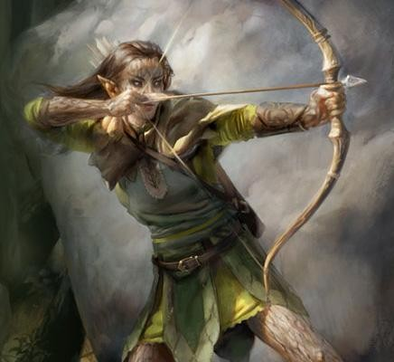
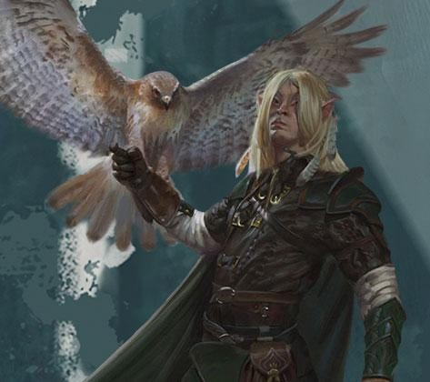

Elfe
Les elfes sont des créatures magiques d’une extraordinaire grâce, habitant le monde sans en faire totalement partie. Ils vivent dans des lieux d’une beauté éthérée, au cœur d’anciennes forêts ou dans des tours scintillantes d’une lumière féerique, là où une douce musique flotte dans l’air et où de subtils effluves embaument la brise. Les elfes aiment la nature et la magie, l’art et l’artisanat, la musique et la poésie, et les bonnes choses de ce monde.
Sveltes et gracieux
« Jamais je n’aurais imaginé qu’une telle beauté puisse exister » dit doucement Lunedor. La journée de marche fut difficile, mais finalement, la récompense allait au-delà de leurs rêves. Les compagnons étaient perchés en haut d’une falaise qui surplombait la fabuleuse cité de Qualinost.
Quatre tours allongées s’élevaient à chaque coin de la cité, comme autant de fuseaux brillants, leur luisante pierre blanche marbrée d’éclats argentés. D’élégantes arches flottaient dans l’air, s’élançant de tour en tour. Construites par d’anciens forgerons nains, elles étaient assez solides pour soutenir le poids d’une armée, et pourtant elles paraissaient si délicates que le frôlement d’un oiseau suffirait à les déséquilibrer. Ces arches lumineuses étaient les seules limites de la cité ; aucun mur ne ceinturait Qualinost. La cité elfique ouvrait ses bras aimables vers la nature sauvage.
- Margaret Weis & Tracy Hickman,
Dragons d'un crépuscule d'automne
Avec leur grâce surnaturelle et leurs traits fins, les elfes paraissent d’une beauté envoûtante aux yeux des humains et des membres des autres races. Ils sont légèrement plus petits qu’un humain moyen. Leur taille varie entre 1,50 m et 1,80 m. Ils sont plus sveltes que les humains, pesant entre 45 et 65 kg. Hommes et femmes sont de tailles similaires et les hommes sont à peine plus massifs que les femmes.
La couleur de peau des elfes comprend les variantes humaines ainsi que des teintes de cuivre, de bronze et une couleur blanche bleutée. Les cheveux peuvent être verts ou bleus, et les yeux comme des bassins d’or ou d’argent liquide. Les elfes sont glabres et imberbes. Ils privilégient les vêtements élégants de couleurs vives et apprécient le port de bijoux à la fois simples et jolis.
Une perspective intemporelle
Les elfes peuvent vivre plus de 700 ans, ce qui leur donne une large perspective sur les événements qui ont bouleversé l'existence des peuples à l’espérance de vie plus courte. Ils sont plus souvent amusés qu’excités et plus enclins à la curiosité qu’à l’avidité. Ils ont tendance à rester distants et imperturbables lors d’incidents mineurs. Toutefois, lorsqu’ils poursuivent un objectif, lors d'une aventure ou dans l’apprentissage d’une nouvelle compétence artistique, les elfes peuvent se montrer tenaces et déterminés. Ils sont lents à former de nouvelles amitiés ou inimitiés, mais encore plus lents à les oublier. Ils répliquent aux insultes anodines par le dédain et aux insultes sérieuses par la vengeance.
Comme les rameaux d’un jeune arbre, les elfes sont flexibles face aux dangers. Ils comptent sur la diplomatie et le compromis pour résoudre les conflits avant qu’ils prennent de l’ampleur. Ils sont réputés pour se retirer dans leurs domaines forestiers lors d’intrusion, confiants qu’ils peuvent simplement attendre le repli des envahisseurs. Mais lorsque le besoin se fait sentir, les elfes dévoilent leurs rigoureuses compétences martiales, en maniant habilement l’épée, l’arc et la stratégie.
Des royaumes forestiers cachés
La plupart des elfes demeurent dans de petits villages forestiers camouflés à travers les arbres. Les elfes chassent le gibier, font la cueillette et cultivent les légumes. Leurs compétences et leur magie leur permettent de vivre en autarcie sans avoir à défricher et labourer la terre. Ce sont des artisans doués qui fabriquent des vêtements finement tissés et des objets d’art. Les contacts avec le monde extérieur sont ordinairement limités bien qu’un petit nombre d’elfes gagnent leur vie en échangeant des oeuvres artisanales contre des métaux (l’exploitation minière ne les intéresse pas).
Les elfes rencontrés hors de leurs propres territoires sont habituellement des ménestrels, des artistes ou des érudits. La noblesse humaine s’arrache les services de tuteurs elfiques pour l’enseignement de l’escrime ou de la magie à leur progéniture.
Exploration et aventure
Les elfes partent à l’aventure pour voir le monde. Puisqu’ils vivent si longtemps, ils peuvent profiter de siècles entiers pour explorer et découvrir. Ils tolèrent mal le rythme de la société humaine, qui est strictement organisée au quotidien mais constamment en mutation d’une décennie à l’autre. De fait, ils choisissent des carrières qui les laissent libres de voyager à leur propre rythme. Les elfes apprécient mettre en pratique leurs prouesses martiales ou faire l’acquisition de pouvoirs magiques toujours plus puissants, ce que la vie d’aventurier leur permet. Certains se joindront à un groupe de rebelles combattant l’oppression tandis que d’autres pourraient devenir les parangons de principes moraux.
Noms elfes
HAUTAINS MAIS GRACIEUX
Malgré le fait qu’ils puissent être hautains, les elfes sont généralement gracieux même avec ceux qui ne sont pas à la hauteur de leurs attentes, autrement dit, avec tous les non-elfes. Ils peuvent toutefois trouver du bon chez à peu près tout le monde.
Nains. « Les nains sont des lourdauds ternes et maladroits. Mais ce qu'il leur manque en humour, en sophistication et en manières, ils le compensent par leur bravoure. Et je dois l’admettre, leurs meilleurs artisans produisent un ouvrage dont la qualité rivalise avec celle des elfes ».
Halfelins. « Les halfelins sont des gens de plaisirs simples et ce n’est pas une qualité à mépriser. Ils font preuve de bonté et ils se soucient des uns et des autres. Ils prennent soin de leurs jardins et ont prouvé qu’ils étaient plus résistants qu’ils ne le laissent paraître lorsque le besoin se fait sentir ».
Humains. « Toute cette précipitation, leur ambition et leur motivation à réaliser quelque chose avant la fin de leur courte vie ; les entreprises humaines paraissent si futiles quelques fois. Mais lorsque vous vous attardez sur leurs réalisations, vous êtes en mesure d’apprécier leurs accomplissements. Si seulement ils pouvaient ralentir et apprendre quelques raffinements ».
Les elfes sont considérés comme des enfants jusqu’à ce qu’ils se déclarent eux-mêmes adultes, aux alentours de leur premier siècle d’existence. Avant ce moment, ils sont appelés par leur nom d’enfant. En se déclarant adulte, un elfe choisit un nom d’adulte, bien que ceux qui l’ont connu enfant persistent à utiliser son nom d’enfant. Chaque nom d’elfe adulte est une création unique. Toutefois, il peut refléter les noms d’individus respectés ou d’autres membres de la famille. Peu de distinctions existent entre le nom d’un homme et d'une femme. Le regroupement suivant n’exprime qu’une tendance générale. De plus, tous les elfes portent un nom de famille qui est typiquement la combinaison d’autres termes elfiques. Certains elfes voyageant avec des humains traduisent leur nom de famille dans la langue commune. D’autres préserveront la version elfique.
Noms d’enfant : Ara, Bryn, Del, Eryn, Faen, Innil, Lael, Mella, Naill, Naeris, Phann, Rael, Rinn, Sai, Syllin, Thia, Vall.
Noms d’adulte masculins : Adran, Aelar, Aramil, Arannis, Aust, Beiro, Berrian, Carric, Enialis, Erdan, Erevan, Galinndan, Hadarai, Heian, Himo, Immeral, Ivellios, Laucian, Mindartis, Paelias, Peren, Quarion, Riardon, Rolen, Soveliss, Thamior, Tharivol, Theren, Varis.
Noms d’adulte féminins : Adrie, Althaea, Anastrianna, Andraste, Antinua, Bethrynna, Birel, Caelynn, Drusilia, Enna, Felosial, Ielenia, Jelenneth, Keyleth, Leshanna, Lia, Meriele, Mialee, Naivara, Quelenna, Quillathe, Sariel, Shanairra, Shava, Silaqui, Theirastra, Thia, Vadania, Valanthe, Xanaphia.
Noms de famille (traduction en commun) : Amakiir (Fleur de gemme), Amastacia (Fleur d’étoile), Galanodel (Murmure de lune), Holimion (Rosée de diamant), Ilphelkiir (Bourgeon de gemme), Liadon (Feuille argentée), Melianne (Talon de chêne), Naïlo (Brise nocturne), Siannodel (Ruisseau de lune), Xiloscient (Pétale d’or).
Traits
Votre personnage elfe possède un ensemble de capacités naturelles qui sont le fruit de millénaires de raffinement elfiques.
Augmentation de caractéristiques. Votre Dextérité augmente de 2.
Âge. Bien que les elfes atteignent la maturité physique à peu près au même âge que les humains, pour les elfes la définition de l'âge adulte dépend plus de l'expérience que l'on peut avoir du monde que de la croissance physique. Un elfe prétend généralement à l'âge adulte et à un nom d'adulte aux alentours de ses 100 ans et peut vivre jusqu'à 750 ans.
Taille. Les elfes mesurent entre 1,50 m et 1,80 m et sont élancés. Votre taille est Moyenne (M).
Vitesse. Votre vitesse de base est de 9 mètres.
Vision dans le noir. Vous pouvez voir à 18 mètres dans une lumière faible comme vous verriez avec une lumière vive, et dans le noir comme vous verriez avec une lumière faible. Dans le noir, vous ne discernez pas les couleurs, uniquement des nuances de gris.
Sens aiguisés. Vous maîtrisez la compétence Perception.
Ascendance féerique. Vous avez un avantage aux jets de sauvegarde contre les effets de charme et la magie ne peut pas vous endormir.
Transe. Les elfes n'ont pas besoin de dormir. Au lieu de cela, ils méditent profondément, restant à demi conscients, 4 heures par jour (le mot commun pour désigner cette méditation est « transe »). En méditant, vous pouvez rêver, tant bien que mal ; ces rêves sont en fait des exercices mentaux qui deviennent un réflexe après des années de pratique. Après un repos de ce type, vous obtenez les mêmes avantages qu'un humain après 8 heures de sommeil.
Langues. Vous pouvez parler, lire et écrire le commun et l'elfique. L'elfique est fluide, possède de subtiles intonations et une grammaire complexe. La littérature elfe est riche et variée, et leurs chansons et poèmes sont célèbres parmi les autres races. Beaucoup de bardes apprennent cette langue afin de pouvoir ajouter des ballades elfiques à leur répertoire.
Sous-race. D'anciens clivages du peuple elfique ont abouti à trois sous-races principales : les haut-elfes, les elfes des bois et les elfes noirs, plus communément appelés drows. Dans certains mondes, ces sous-races sont elles-mêmes subdivisées (comme les elfes solaires et les elfes lunaires des Royaumes Oubliés), et vous pouvez si vous le souhaitez choisir une de ces subdivisions.
Haut-elfe
En tant que haut-elfe, vous avez l'esprit vif et connaissez les rudiments de la magie. Notez qu'il existe deux sortes de hauts-elfes. Les premiers (les elfes du soleil) sont hautains et solitaires, se pensant supérieurs aux non-elfes et même aux autres elfes. Les seconds (les elfes de la lune), plus communs et plus conviviaux, sont souvent rencontrés chez les humains et les autres races. Les elfes du soleil ont la peau de couleur bronze et les cheveux de couleur cuivre, noir ou or. Leurs yeux sont de couleur or, d'argent ou noir. Les elfes de la lune sont beaucoup plus pâles. Ils ont souvent les cheveux blanc-argenté, noir ou bleu, mais diverses nuances de blond, brun et roux ne sont pas rares. Leurs yeux sont bleus ou verts et mouchetés d'or.
Augmentation de caractéristiques. Votre Intelligence augmente de 1.
Entraînement aux armes elfiques. Vous obtenez la maîtrise des épées (longues et courtes) et des arcs (longs et courts).
Sort mineur. Vous connaissez un sort mineur de votre choix parmi la liste des sorts mineurs de magicien. L'Intelligence est votre caractéristique d'incantation pour ce sort.
Langue supplémentaire. Vous parlez, lisez et écrivez une langue supplémentaire de votre choix.
Elfe des bois
En tant qu'elfe des bois, vous avez des sens aiguisés et une forte intuition. Vous vous déplacez rapidement et discrètement dans vos forêts. Les elfes des bois (également appelés elfes sauvages, elfes verts ou elfes des forêts) sont reclus et méfiants envers les non-elfes. La peau des elfes des bois tend à être cuivrée, parfois avec des traces de vert. Leurs cheveux tendent vers le brun et le noir, mais peuvent parfois aussi être blonds ou cuivrés. Leurs yeux sont verts, bruns ou noisette.
Augmentation de caractéristiques. Votre Sagesse augmente de 1.
Entraînement aux armes elfiques. Vous obtenez la maîtrise des épées (longues et courtes) et des arcs (longs et courts).
Foulée légère. Votre vitesse de base passe à 10,50 mètres.
Cachette naturelle. Vous pouvez tenter de vous cacher dans une zone à visibilité réduite, comme en présence de branchages, de forte pluie, de neige qui tombe, de brume ou autre phénomène naturel.
Elfe noir (drow)
En tant que drow, vous êtes imprégné par la magie de l'Outreterre, un royaume souterrain fait de merveilles et d'horreurs que l'on voit rarement à la surface. Vous êtes chez vous dans les ombres et, grâce à votre magie innée, vous pouvez invoquer à la fois la lumière et les ténèbres. Les vôtres ont tendance à avoir les cheveux blancs et la peau grisâtre.
Le culte de la déesse Lolth, la Reine des araignées, a corrompu certaines des plus anciennes cités drows, en particulier dans l'univers de Greyhawk et sur Toril. Eberron, Krynn et d'autres mondes échappent à l'influence du culte... pour l'instant. Mais partout où le culte est une menace, des héros drows se dressent contre lui, cherchant à briser la toile tentaculaire de Lolth.
Augmentation de caractéristiques. Votre Charisme augmente de 1.
Vision dans le noir supérieure. Votre vision dans le noir est étendue à 36 mètres.
Sensibilité au soleil. Vous avez un désavantage aux jets d'attaque et aux jets de Sagesse (Perception) basés sur la vue quand vous, la cible de l'attaque ou ce que vous essayez de détecter est exposé à la lumière du soleil.
Magie drow. Vous connaissez le sort mineur lumières dansantes. Lorsque vous atteignez le niveau 3, vous pouvez lancer le sort lueurs féeriques une fois avec ce trait et regagnez cette capacité lorsque vous terminez un repos long. Lorsque vous atteignez le niveau 5, vous pouvez lancer le sort ténèbres une fois avec ce trait et regagnez cette capacité lorsque vous terminez un repos long. Le Charisme est votre caractéristique d'incantation pour ces sorts.
Entraînement aux armes drows. Vous obtenez la maîtrise des rapières, des épées courtes et des arbalètes de poing.
Traduit par Puncho et blueace